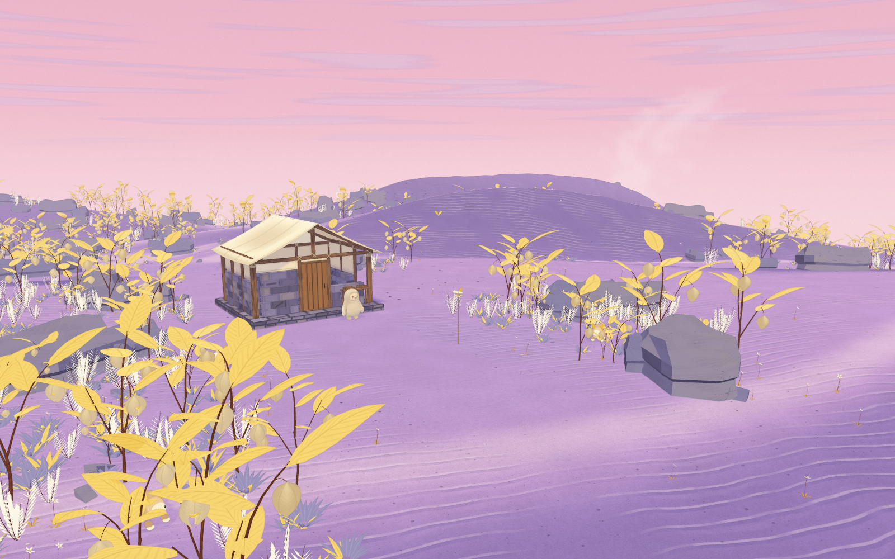
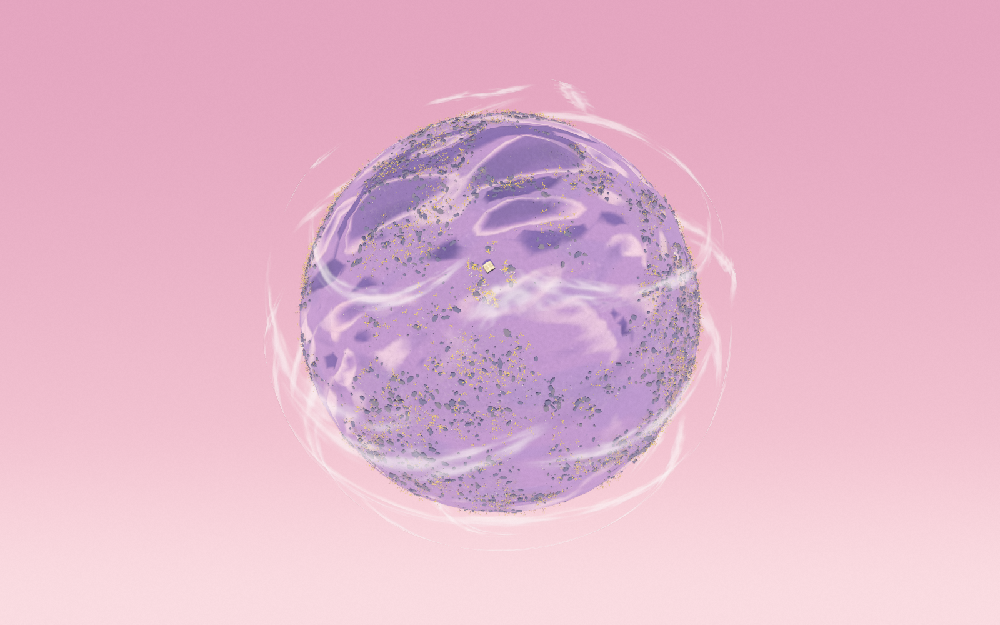

Paper Orchard
Violet sand, golden Physalis, feathered ivory foliage and dusty pink daylight.
Open the living planet ·
Validation and remaining gaps
 Concept target
Concept target
Approved Physalis fruit and pink-sky direction. This is concept art.

Actual app · Orchard · Windows November 2
Seed 412 · high quality · time 12 · render scale 1 · RTX 4070 SUPER / D3D11. Interactive 3D interpretation; visual sign-off is pending.

Final whole globe · R128 · actual Windows app
The final views include the texture and detail-budget fixes, checked against current main. Final capture evidence.
The latest live app view has ribbons at 2.25× their original width, another 50% increase from the preceding adjustment. The other Windows captures preserve the preceding globe pass.
Current globe views show vegetation and rocks around both hemispheres, broad planted regions and bare dunes, and thin cirrus moving around the sphere. Windows exports are 1600×1000 at DPR1 with four-sample terrain antialiasing. Capture evidence. Other saved detail views are the November 1 Mac checkpoints.
Compare the large dune shapes, open route and grouped planting first, then inspect grain, wind ripples, thin calyces, leaf veins and shelter joints. “Before materials” uses the same Orchard camera as the current checkpoint. The earlier pass is a saved intermediate state, not an untouched baseline. Broader shapes and simpler drawing detail remain visible differences from the concept.